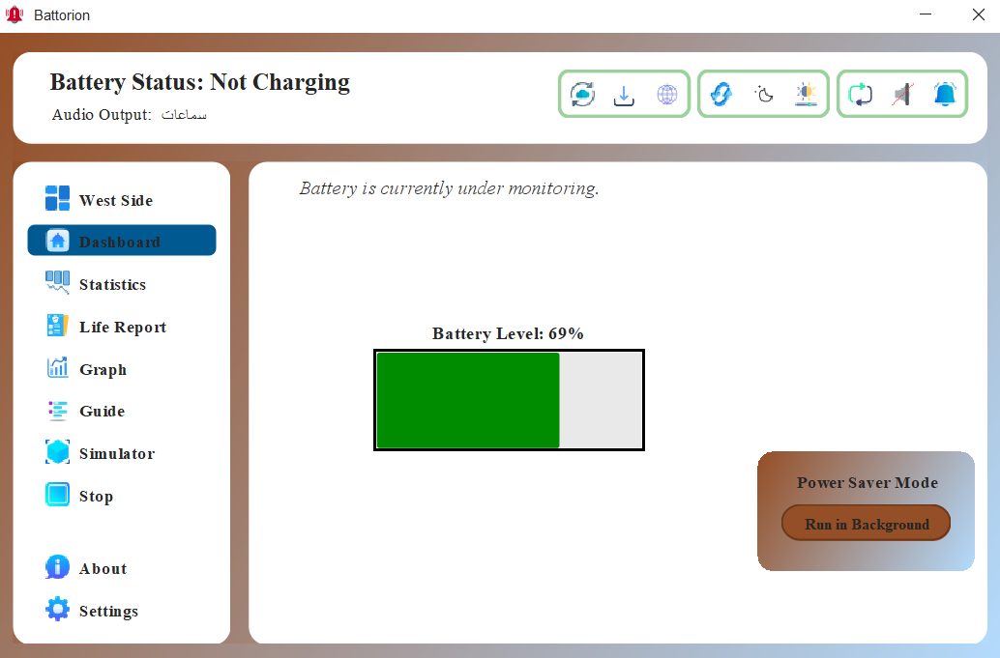

Real-Time Monitoring
Monitor your battery health, charge level, and discharging rate with up-to-the-second accuracy. Battorion operates in the background to ensure you're always informed.
An intelligent tool to keep your device's power usage optimized.

Discover the smart tools that keep your battery healthy and efficient.